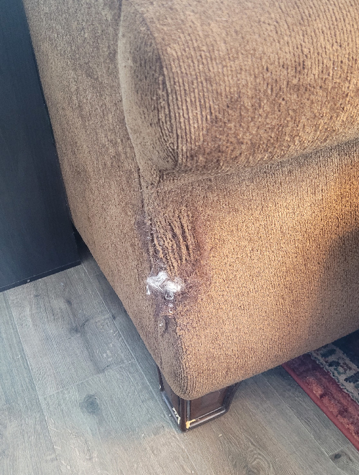
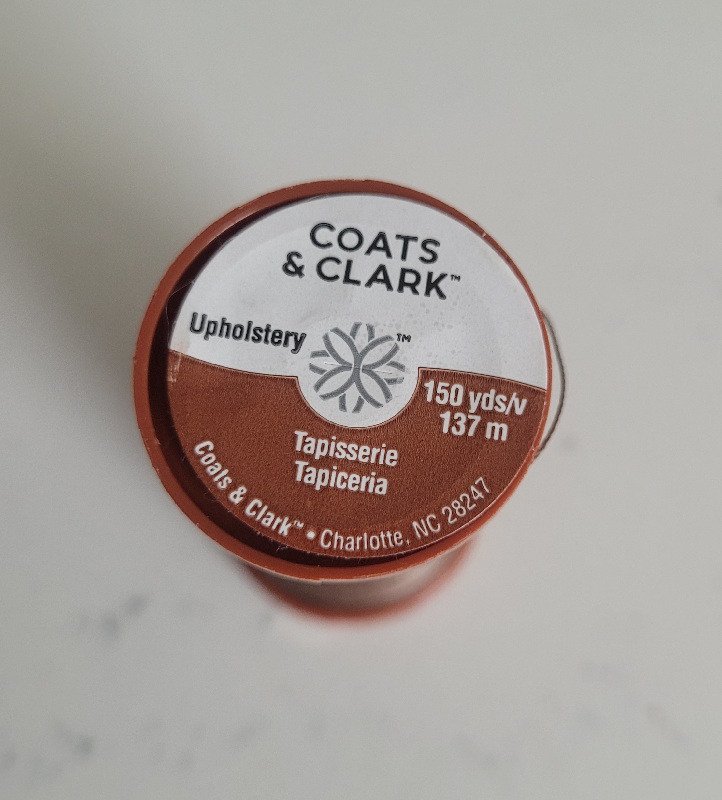

Rescue Couch Corner
Status: completed
Ever since I moved, my living room couch is no longer against a wall, and the back corners are exposed. One of my cats has decided it’s an excellent scratching post, and she makes frequent use of it, classic.
The crime:

The criminal:
From experience, there’s not really anything I can do that will outright dissuade her from using this prime fabric real estate, so I figured it’d be best to just roll with it and turn that corner into something she can scratch to her heart’s content, without opening a hole into the couch itself and getting white fluff EVERYWHERE. Commence Project Wanton Upholstery Destruction Mitigation.
I got this cheap rug from the store that seemed vaguely the correct size and color, and I was almost close enough on both counts! My goal was to just wrap/sew this around the damaged corner, protecting it from further damage and hopefully still tempting enough that she doesn’t instead target some other innocent and unsuspecting piece of furniture.
I had one of those super chonk curved upholstery needles (important since I only have access to one side of the material I’m sewing onto) and some upholstery thread pictured below, and the plan was to use a whip stitch all the way around to affix the rug to the couch.

I took some inspiration for how to do this from this post.
The thread:

I’m never sure how to correctly determine the length of thread to use, so I just cut a piece of thread 3x the length of the top of the rug and planned to sew multiple sections/e.g. each side separately. 3x was enough for half of the top border, ended up doing 4x for the other half of the top and each other side. I used the extra length to double over every few stitches, just to make sure it would hold sufficiently well.
The rug I’m using is 17.4 x 30” and the first problem I encountered is that 17.4” is way too tall and hangs off the bottom, because I’d been too lazy to actually measure beforehand:
My inelegant solution was to partially sew along the bottom/just under the rim of the couch, switching to (I think?) a backstitch since I was no longer sewing along the border. This was really difficult because of the limited room underneath (I have a thin board of MDF nailed on the bottom because my cats also previously tore the fabric from underneath and liked hiding inside the couch.) In retrospect, it would have been better to flip the couch over and just drive some more nails through both rug and board, which would likely have kept it tighter/folded underneath more cleanly.
Here’s an image from when I’d started sewing along the top, you can see the stitches if you look closely, but it mostly blends in and successfully holds up when kitty chooses violence.
The final product is shown below, the extra length means that it visibly wraps around the back wooden foot, and given the weird size/shape of the foot the stitching underneath only goes in about a quarter of the length of the border on each side. The weird curve of the couch also makes it so that the top of the rug can’t be parallel to the ground on both sides simultaneously, so I had to choose which side I thought would be more visible/obvious (I chose the back/left side of the photo.)
Lessons learned
- I don’t know, maybe actually measure what you’re trying to cover instead of in the store going “yeah that looks about right” :D